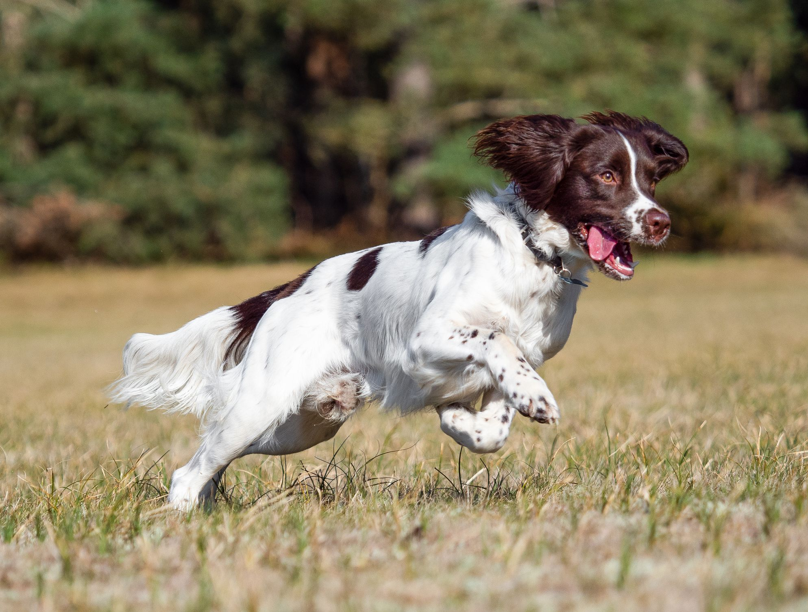

Springer Spaniel

- The English Springer is a breed of gun dog in the Spaniel group traditionally used for flushing and retrieving game. It is an affectionate, excitable breed with a typical lifespan of twelve to fourteen years.
- They are very similar to the Welsh Springer Spaniel and are descended from the Norfolk or Shropshire Spaniels of the mid-19th century; the breed has diverged into separate show and working lines.
- The breed suffers from average health complaints. The show-bred version of the breed has been linked to "Rage syndrome", although the disorder is very rare. It is closely related to the Welsh Springer Spaniel and very closely to the English Cocker Spaniel; less than a century ago, springers and cockers would come from the same litter.